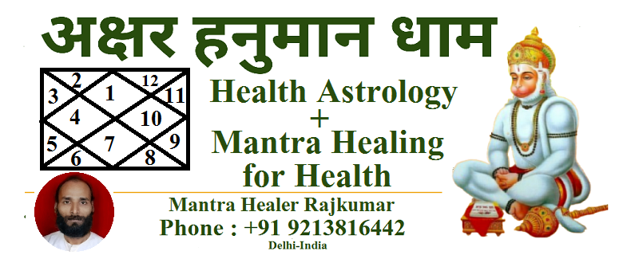

Mantra Chanting for Health, Prosperity, and Peaceful Life
At Akshar Hanuman Dham, we offer effective and safe mantra healing and mantra chanting to address physical, mental, and spiritual well-being. Whether you are seeking healing, prosperity, or inner peace, our mantra healing services can support your journey toward a balanced and harmonious life.
Mantra Healing
Mantra Healing: A Path to WellnessMantra healing is an ancient spiritual practice that harnesses the power of positive energy through the repetition of sacred mantras. This method helps align the body’s life force by meditating on the divine and channeling positive energy. The healing process empowers the mind, boosts willpower, and strengthens the body’s energy flow, ultimately aiding in the recovery from illness and mental distress.
Because mantra healing works on the principle of faith and belief, the results unfold gradually. Patience is key, and it’s essential to continue any prescribed medical treatments in tandem with mantra healing. This holistic approach complements traditional medicine and is entirely safe, without any adverse side effects.
Fee
Consultation Fee: ₹500Healing Session: ₹100 for a 5-minute session
About Akshar Hanuman Dham
Akshar Hanuman Dham is a sacred temple dedicated to the worship of **Lord Hanuman**. The temple is filled with the divine energy of Lord Hanuman, cultivated through the chanting and meditation practices of Gurudev Raj Kumar, skilled Pandits, Sadhaks, and devoted followers. Here, you can meditate and chant the powerful mantras of Lord Hanuman to enhance your spiritual connection and manifest your wishes.Regular meditation and mantra chanting at this energetic space amplify your chances of fulfilling your desires, whether related to health, prosperity, or peace.
Temple Timings: 10:00 AM – 8:00 PM
Contact Us Today
Start your healing journey with the power of mantra chanting for better health, prosperity, and peace.Akshar Hanuman Dham
Address: J-34/209, Gali No.4,
West Sagarpur, New Delhi-110046, India
Phone: +91 9213816442
Email: hanumandham@gmail.com